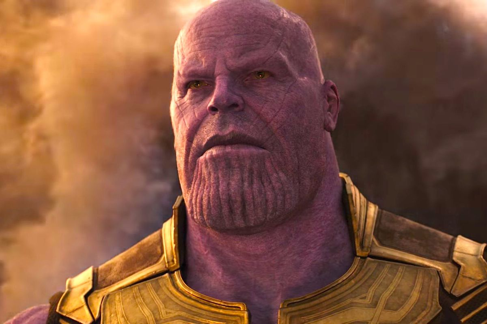
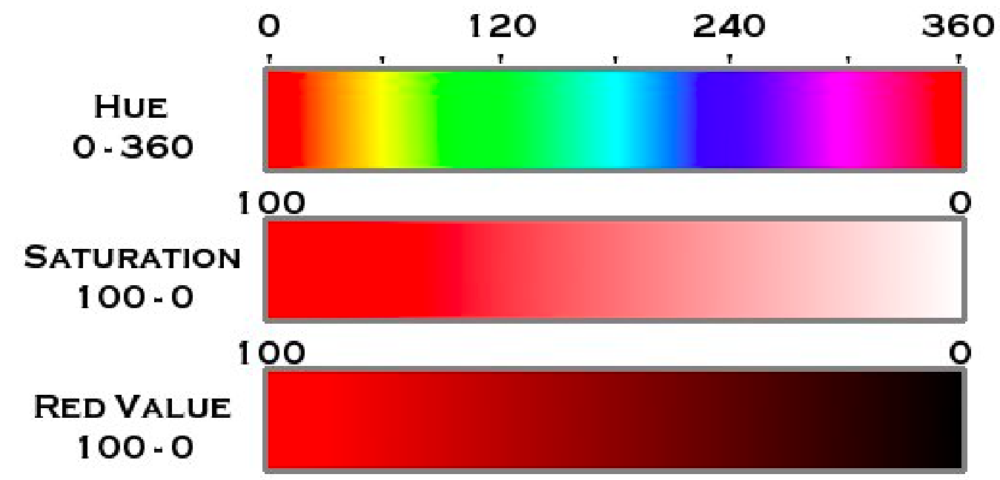
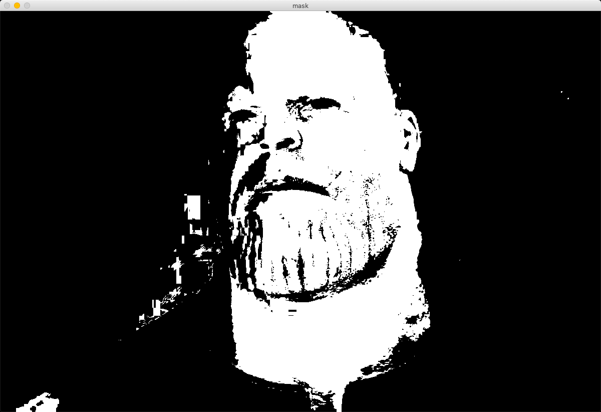
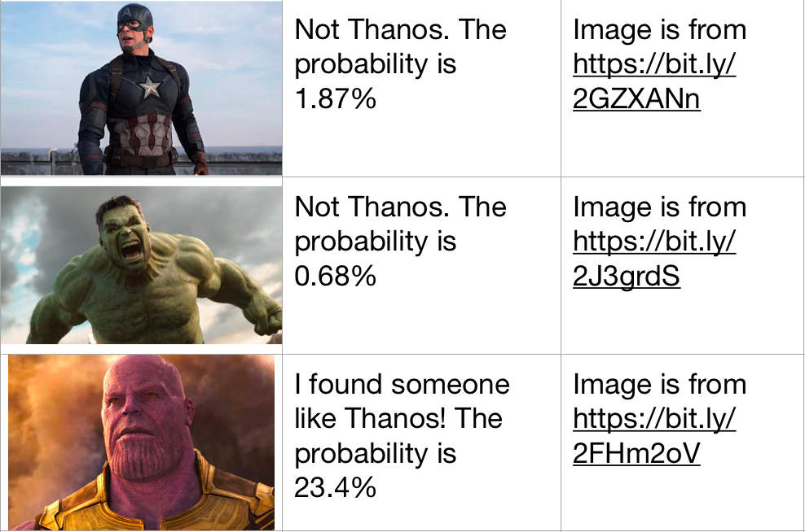

Herkese merhaba, Tony Stark’ın Thanos’u aramak için yeni bir sisteme ihtiyacı var. Thanos yaşayanların yarısını yok ettikten sonra başka bir gezegene kaçtı. Stark’ın drone'ları her yerde onu arıyorlar ama aldıkları görüntüleri analiz edip Thanos’un olup olmadığına karar verecek bir sistemleri yok! Bunu bizim yapmamızı istiyor.
Deli Titan’ı tespit etmek için mor rengini kullanacağız. Kullanacağımız yazılım dili Python ve kütüphanelerimiz OpenCV ile Numpy.
 Testlerimiz için bu fotoğrafı kullanacağız.{kind=link}
Haydi başlayalım!
Öncelikle bilgisayarınızda Python, OpenCV ve Numpy yüklü olduğuna emin olun.
İlk önce gerekli kütüphanelerimizi kodumuza eklememiz gerekli:
import cv2
import numpy as np
Fotoğrafı almak, Thanos olma şansını hesaplamak ve bir cevap döndürmek için bir çalışma döngüsüne ihtiyacımız var. Bunu “run()” fonksiyonunda yapacağız.
def find_thanos(photo_name):
# Görüntüyü burada işleyeceğiz
def run():
while True:
photo_name = input()
if photo_name == “”:
break
else:
find_thanos(photo_name)
run()
Görüntüyü bilgisayarınızda kayıtlı adını kullanarak koda yüklememiz gerekiyor.
def find_thanos(photo_name):
# Bu kod satırı fotoğrafı okuyup kullanılabilir hale getirir
image = cv2.imread(photo_name)
Sonrasında renk uzayını değiştireceğiz.Renk uzayı, renkleri düzenlediğimiz bir sistem. Farklı durumlar için kullanabileceğiniz birkaç uzay var. Ancak, bence, OpenCV ile çalışması en kolay olan HSV. Hepsini burada bulabilirsiniz.
def find_thanos(photo_name):
image = cv2.imread(photo_name)
# Renk uzayı değişimlerini yapacak olan fonksiyon
image = cv2.cvtColor(image, cv2.COLOR_BGR2HSV)
Bu işlemi, Thanos'un mor rengini kolayca tespit etmek için yaptık. Şimdi hangi piksellerin mor olduğunu bulabiliriz. HSV’nin açılımı Hue (Ton), Saturation (Doygunluk) ve Value (Değer).
 Fotoğrafın kaynağı için tıklayın.{kind=link}
Hue, bir açı değeridir. Rengi belirler. Saturation beyaz ile renklilik arasında bir değişimdir. Değer ise siyah ve renklilik arasında bir değişimdir. Python için maksimum değerler 360, 100 ve 100 yerine 180, 255 ve 255'tir.
İki HSV değerini sınır olarak belirleyeceğiz ve OpenCV, görüntüde piksel değerlerinin sınırlarımız arasında nerede olduğunu tespit edecek. Bu değerleri genelde deneyerek buluyoruz.
# Mor renk için HSV sınır değerleri
lower_bound = np.array([40, 70, 70])
upper_bound = np.array([180, 255, 255])
Şimdi bu sınırları, mor rengi bulmak için kullanacağız. Bir Mask yapacağız. Mask (Maske), openCV'deki özel bir görüntü şekli. Bizim durumumuzda, eğer renk sınırlar arasındaysa maskedeki piksel beyaz olacaktır. Aksi takdirde, siyah olacaktır.
mask = cv2.inRange(image, lower_bound, upper_bound)
Kodumuzun Thanos'un rengini tespit edip edemediğini görelim.
# Resmi kullanıcıya göstermek için gereken kod
cv2.imshow(“mask”, mask)
# Kodu durdurup boşluk tuşuna basmanızı bekleyen kod
cv2.waitKey(0)
Test fotoğrafımızın maskesi bu şekilde oldu:
 Mor renkle maskelenmiş Thanos.{kind=link}
Çok iyi görünüyor 👍
Ama Stark’ın makinelerinin bu resmi anlayabilmesini nasıl sağlayacağız? Birkaç satır kod ekleyelim. Basitçe, beyaz piksellerin tüm resme olan oranını bulacağız. Eğer mor renk oranı yükselirse, Thanos olma ihtimali yükselir diyeceğiz.
# Toplam kaç piksel olduğunu bulalım
num_of_pixels = mask.shape[0] * mask.shape[1]
# Beyaz olanların sayısını bulalım
num_of_white = np.sum(mask == 255)
# Oranı hesaplayalım
ratio = num_of_white / num_of_pixels
O zaman, yüksek olasılıkla Thanos var diyorsak bu veriyi Yenilmezler ekibinin görebilmesi için yazdıralım.
if ratio > 0.2:
print("I found someone like Thanos! The probability is", ratio*100, "%") # Thanos olabilir
else:
print("Not Thanos. The probability is", ratio*100, "%”) # Thanos değildir
Kodumuz çalışıyor gibi görünüyor! Bazı test sonuçları burada:
{kind=link}
Okuduğunuz için teşekkürler. Sonraki yazılarda görüşmek üzere!